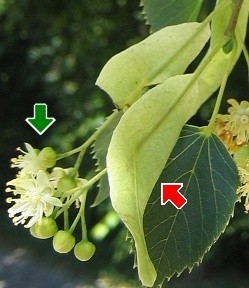
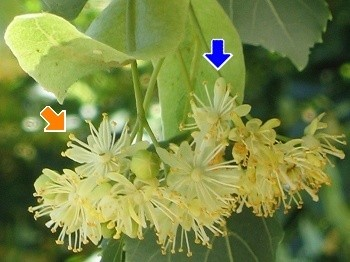

|
| Die Winterlinde blüht im Juni und Juli.
Der Blütenstand besteht aus mehreren Blüten. Sein langer Stiel ist mit einem hellgrünen Tragblatt verwachsen.
 |  Die Blüten haben 5 gelblichweiße Blütenkronblätter und viele Staubblätter.
Sie werden von Bienen und Hummeln bestäubt.
|